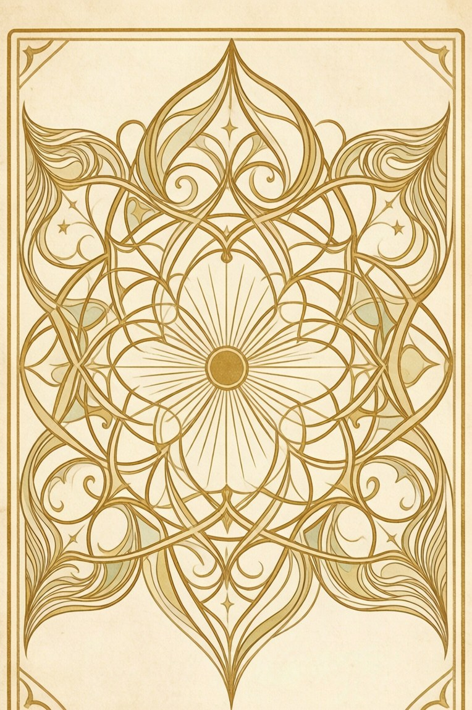

3D rendering is not available in this browser
Switched to the simple mode. Everything still works.
JavaScript is required
Enable JavaScript in your browser settings and refresh.

Sink
Seal
Whisper your question…
Ask once, ask true. Ask twice, the cards lie.